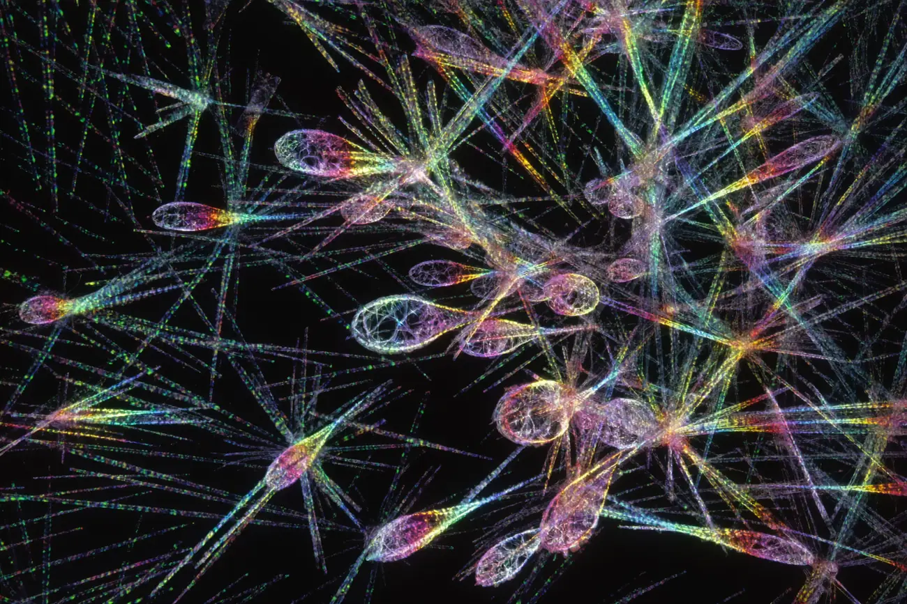
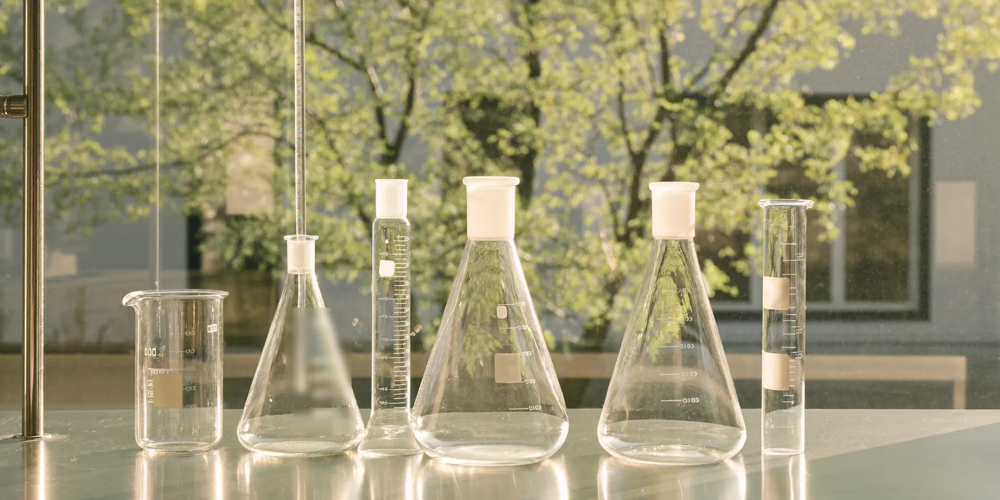
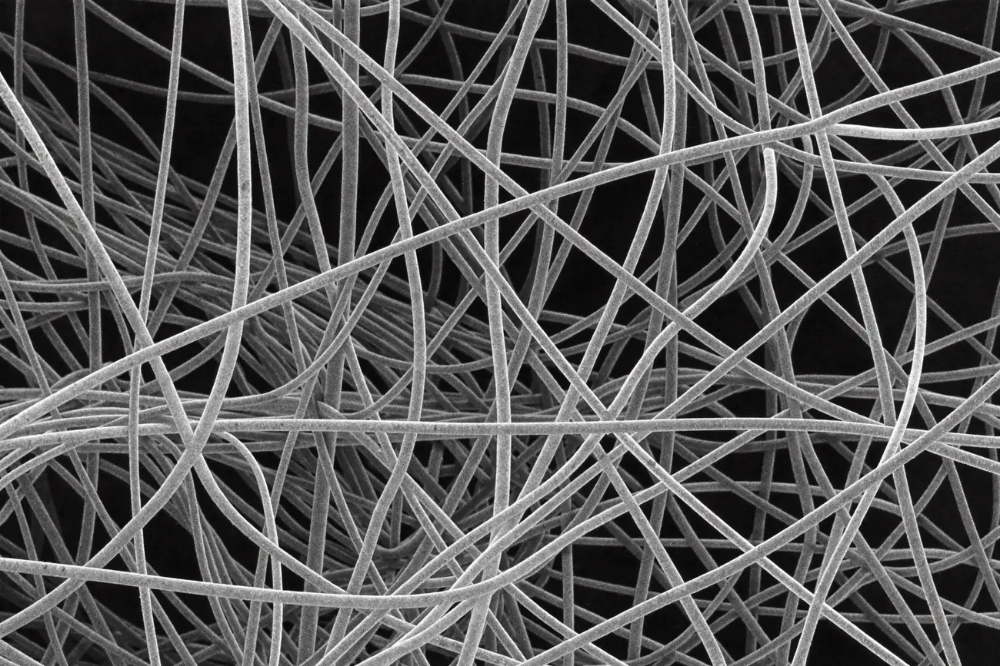
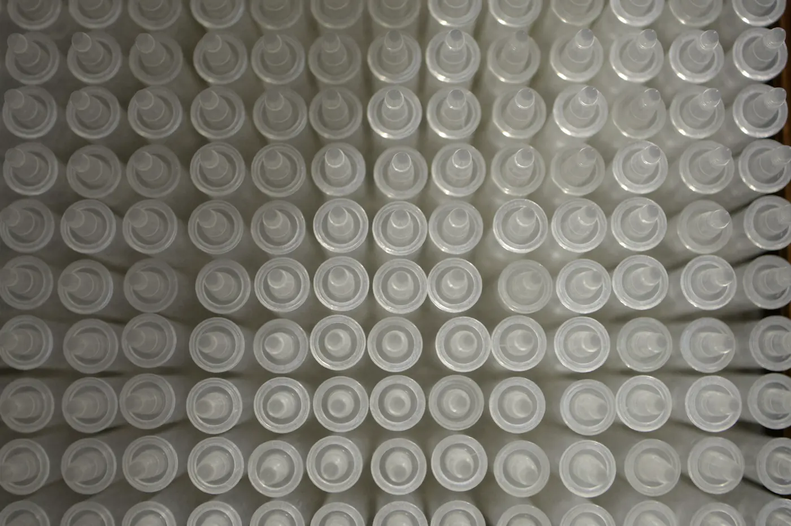
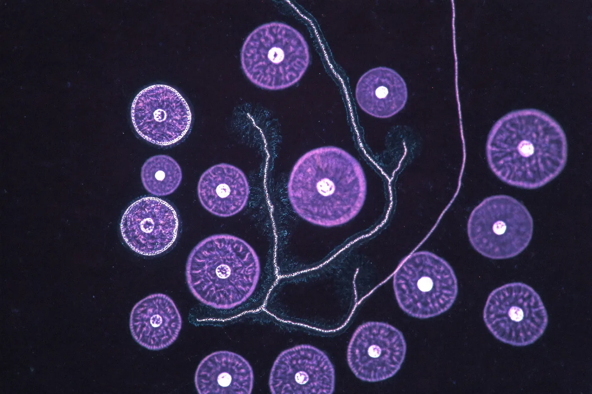
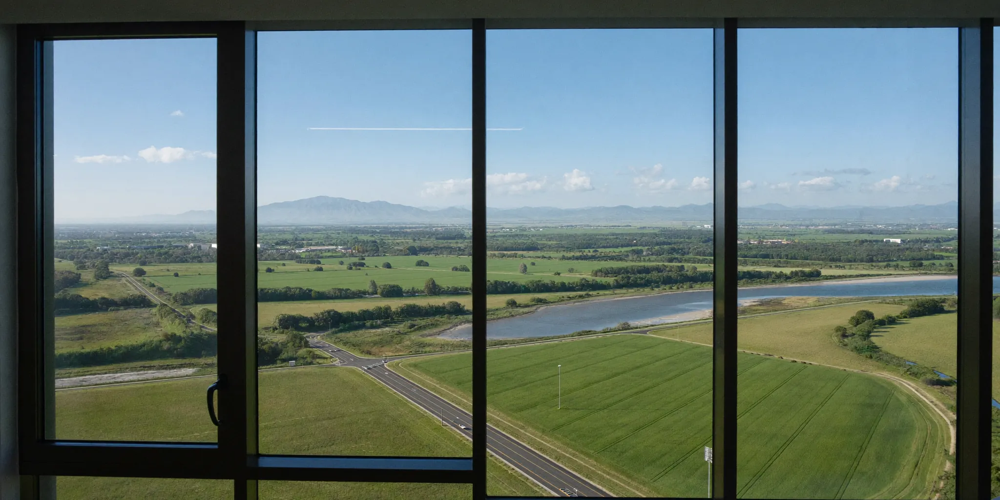

| Line | Grade | Purity |
|---|---|---|
| Phosphate buffers | ACS | ≥ 99.5% |
| Tris / HEPES | Molecular | ≥ 99.9% |
| Fixed reagents | Analytical | ≥ 99.0% |
| Custom molarity | To spec | Certified |
Reagents, filtration and cell-culture consumables — batch-traceable, cold-chain kept, with a certificate of analysis in every carton.

Everything we ship is made to a specification and proven against it before it leaves. Every lot carries a batch number that resolves — through us — to the assay, the water, and the day it was made. When a paper of yours needs a supplier line, ours holds up.
Below: one exemplar lot, read two ways. The certificate is what your QA signs off; the trace is the purity that certificate stands on.
| Assay (HPLC) | 99.4% |
| Water (Karl Fischer) | 0.08% |
| Conductivity | 1.1 µS/cm |
| Endotoxin | < 0.05 EU/mL |
| Heavy metals | < 5 ppm |
| Release | PASS |
Four families on the tray.

| Line | Grade | Purity |
|---|---|---|
| Phosphate buffers | ACS | ≥ 99.5% |
| Tris / HEPES | Molecular | ≥ 99.9% |
| Fixed reagents | Analytical | ≥ 99.0% |
| Custom molarity | To spec | Certified |

| Item | Pore | Format |
|---|---|---|
| PES membranes | 0.22 µm | 47 mm |
| Syringe filters | 0.45 µm | 25 mm |
| Filtered tips | — | 10–1000 µL |
| Centrifuge tubes | — | 15 / 50 mL |

| Item | Certification | Pack |
|---|---|---|
| Pipette tips | DNase/RNase-free | racked · 960 |
| PCR plates | Low-bind | 25 |
| Microtubes | Sterile | 500 |

| Line | Test | Format |
|---|---|---|
| Classical media | Endotoxin < 0.1 EU | 500 mL |
| Fetal sera | Mycoplasma −ve | 100 / 500 mL |
| Supplements | Sterility | To spec |
We hold stock so you don't have to gamble a run on a lead time — most lines ship same day, cold chain intact, tracked to your dock. A lab is a place with a view, not a basement; ours looks out over the valley, and we suspect the good days at yours feel a little like this too.
